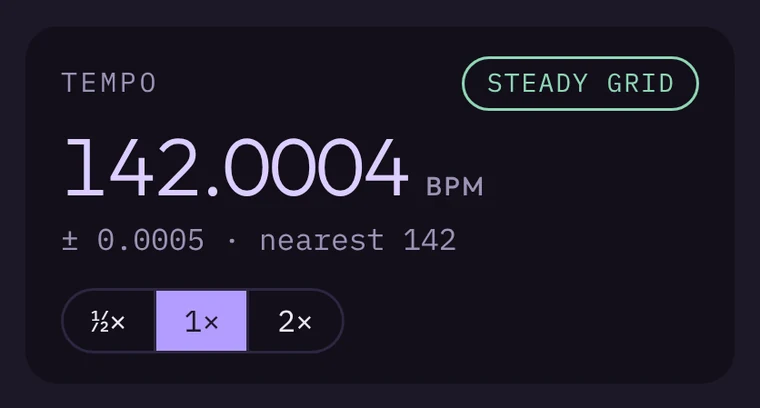

BPM you can trust to the fourth decimal
Keygrid finds every beat in the track and fits them all at once, so the tempo holds from the first bar to the last. Switch to half or double time with one click, and play it back with a click track to check by ear.
